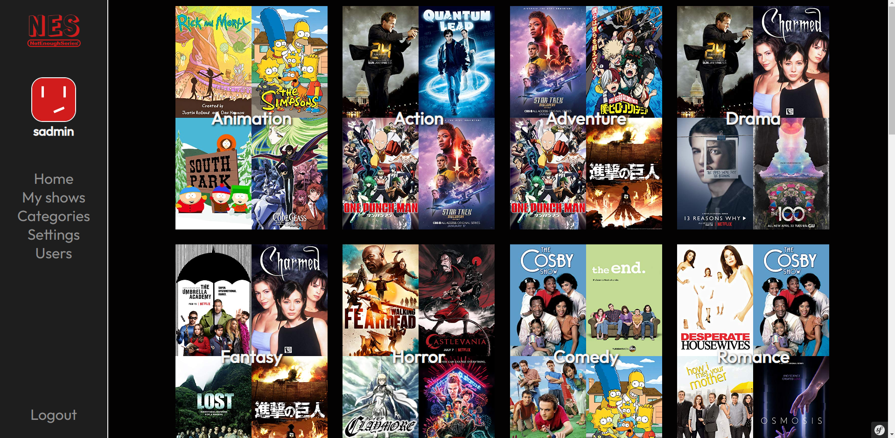

Outils Utilisés
-
Framework Symfony
-

HTML/CSS
Compétences Acquises
- Management agile : SCRUM
- Adaptation aux demandes du client
- Lier une base de données en évolution à une interface
Objectif
Ce projet m'a permis de renforcer ma créativité et de maîtriser HTML, CSS, et PHP avec Symfony pour développer une application full-stack. En collaborant avec le Product Owner, j'ai appris à créer un site ergonomique et conforme aux normes web. Cette expérience m'a apporté une solide compréhension des technologies et des bonnes pratiques en matière d'ergonomie.
Site de streaming de séries, films
